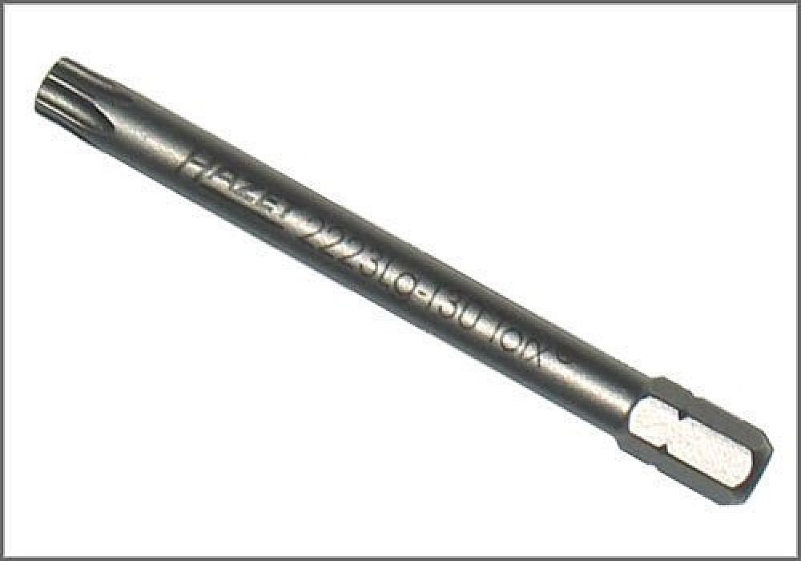

Torx Socket Insert - AST Tool # H 2223 LG T-30
Torx Socket Insert
AST tool# H 2223 LG T-30

Used for the R and R of the airbag from the steering wheel and is applicable to many BMW, Mercedes, Saab and Volkswagen models.
- 70mm long
- Applicable to Many Models
Contact AST for pricing.
Assenmacher Specialty Tools
1-800-525-2943